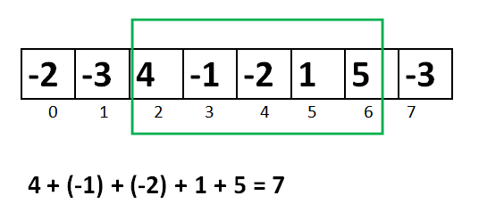

3.2.3. 最大区间和问题（洛谷P1115）¶
最大区间和（Largest Interval Sum）问题就是在一个数列 \(A=\{a_n\}\) 中寻找一段连续的子区间 \(\{a_i,\dots,a_j\}\) 使得这个子区间中数字之和 \(\sum_{k=i}^j{a_k}\) 是该数列的所有连续子区间数字之和的最大者。
例如，数列 [-2,-3,4,-1,-2,1,5,-3] 的最大区间和为7，是其中第3项到第7项的子区间 [4,-1,-2,1,5] 的和。注意：最大区间和问题只求那个最大的和数，不求子区间是哪一个。
数列 \(A=\{a_n\}\) 中项数为1的连续子区间有 \(\{a_1\},\dots,\{a_n\}\)，共 \(n\) 个；项数为2的连续子区间有 \(\{a1,a2\},\dots,\{a_{n-1},a_n\}\)，共 \(n-1\) 个，依此类推，项数为 \(n-1\) 的连续子区间共有 \(2\) 个，分别为 \(\{a_1,\dots,a_{n-1}\}\) 和 \(\{a_2,\dots,a_n\}\)；最后项数为 \(n\) 的连续子区间共 \(1\) 个，就是数列 \(A\) 本身。所以它的连续非空子区间的总数为 \(1+2+\cdots+n=\frac{n(n+1)}{2}\) 个。如果采用暴力搜索，就要对所有这些子区间分别进行求和，然后比较各自的大小找出最大的那一个，每次求和需要用一个次数和项数相等的循环，这是一个 \(O(n^3)\) 时间复杂度的算法，显然不是一种好的算法。
如果采用下一节要介绍的前缀和方法，那么计算每一个子区间之和的步骤可以降为 \(O(1)\)，这样如果还是用暴力搜索的话，整个算法的时间复杂度可以降低到 \(O(n^2)\) 级别，但仍然不够好。另外还有一些别的精巧的算法思路，可以通过二分等方法来把时间复杂度降到 \(O(n\log n)\)，但是这些算法对于这么一个问题来说过于复杂了，一般我们不推荐使用。
求解最大区间和问题，有一个非常经典的标准算法叫做Kadane算法，是卡内基梅隆大学的Kadane教授发明的。它的思路和代码都相当简单，而且是一个在线算法，可以一边读数一边统计，不需要保存数据，读完一遍结果就统计出来了，时间复杂度为 \(O(n)\)。
警告
在大多数中文网站上去查Kadane算法，会查到Kadane教授最初设计的第一个版本，这个版本适用于数列中至少有一个非负项的情况，但是对于全负项数列是会出错的。我们将要介绍的是一个由Mohit Kumar改进过的Kadane算法，它适用于全负项的数列。
其实对于全负项数列，它的最大区间和就是其中最大的那个负数。Kadane教授最初设计时可能觉得这种情况是没有什么实际意义的，所以并没有考虑它，但是算法编程题往往会放进一些全负数的坑测试点。所以我们直接学习改进的Kadane算法。
算法思路
Kadane算法在不断读数过程中，同时不断计算读到当前为止的正数的区间和，对这些正数区间和进行逐个比较大小，最后确定出最大区间和为多少。
算法的思路其实很简单，那就是最大和子区间的前任意个数之和都不能为负数。比如 \([-2,4]\)，它的和是2。但是它就不可能成为一个最大和子区间，因为它的前1个数是负数-2，所以去掉第1项-2就可以分离出一个和更大的子区间 \([4]\)。再比如 \([2,-3,5]\) 也不可能成为最大和子区间，因为它的前2项之和是负数-1，所以去除前2项之后就能得到一个和更大的子区间 \([5]\)。
所以算法在逐个读入数据的同时，不断地累加读入的数，作为到当前项为止的潜在最大和 \(S\)。每当这个累加结果成为一个负数时，它就成为了一个“拖后腿”的负前缀，应该抛弃掉。这时候应该将下一个数作为潜在的最大和子数列的起始元素，重新开始累加。
每当我们读入一个新数 \(a_i\) 后，按照上面的说法，如果此时 \(S\lt0\) 那么就应该从 \(a_i\) 开始重新累加，即应该让 \(S\leftarrow a_i\)；否则就应该继续累加，即让 \(S\leftarrow S+a_i\)。
无论 \(a_i\) 是正是负还是零，总之按照不等式运算的规则，当 \(S\lt0\) 时，有 \(S+a_i\lt a_i\)，这时候要让 \(S\) 变成 \(a_i\)；而当 \(S\ge 0\) 时，则 \(S+a_i\ge a_i\)，这时候要让 \(S\) 变成 \(S+a_i\)。所以上面这个分情况赋值可以改写成更加简洁的形式：
同时，累加过程中得到的潜在最大和要记录其最大值 \(Max\)。这个步骤其实就是最简单的在多个数中找最大者，每次更新了候选值 \(S\) 之后让它和 \(Max\) 进行比较然后记录下较大的那一个就可以了：
最后，解决全负项数列的问题。其实很简单，我们只要把数列的第一项 \(a_1\) 作为 \(S\) 和 \(Max\) 的初始值就可以了。全负项的情况下，每一次更新 \(S\) 都会导致从新读入的项开始重新累加，于是所有的潜在最大和其实就是每一个项的值，算法于是退化成在数列中寻找最大项。
于是我们得出以下算法：
改进的Kadane算法
\(\text{Kadane}(A,n):\)
\(S\leftarrow a_1\)
\(Max\leftarrow a_1\)
\(\text{FOR } i \leftarrow 2 \text{ TO } n \text{ DO}\)
\(S\leftarrow \max(S+a_i, a_i)\)
\(Max\leftarrow \max(S,Max)\)
\(\text{RETURN } Max\)
算法很简单，代码同样很简单。根据Kadane教授使用的变量名，“到当前项为止的潜在最大和” \(S\) 用变量名 max_end_here，“到目前为止已经得到的最大和” \(Max\) 用变量名 max_so_far。下面是在线算法版的代码，是一边从键盘读取数据，一边计算最后数据读完，结果出来的版本。为了让代码更加整洁易读，我们定义了一个内联函数 max(int a, int b) 来获取两个整数的较大者。
#include <cstdio>
inline int max(int a, int b)
{
return a > b ? a : b;
}
int main()
{
int n, a, max_so_far, max_end_here;
scanf("%d", &n);
scanf("%d", &a);
max_so_far = a;
max_end_here = a;
while (--n) {
scanf("%d", &a);
max_end_here = max(max_end_here + a, a);
max_so_far = max(max_so_far, max_end_here);
}
printf("%d\n", max_so_far);
return 0;
}
这个程序不加任何修改就可以直接通过洛谷P1115题“最大子段和”，请完成此题。